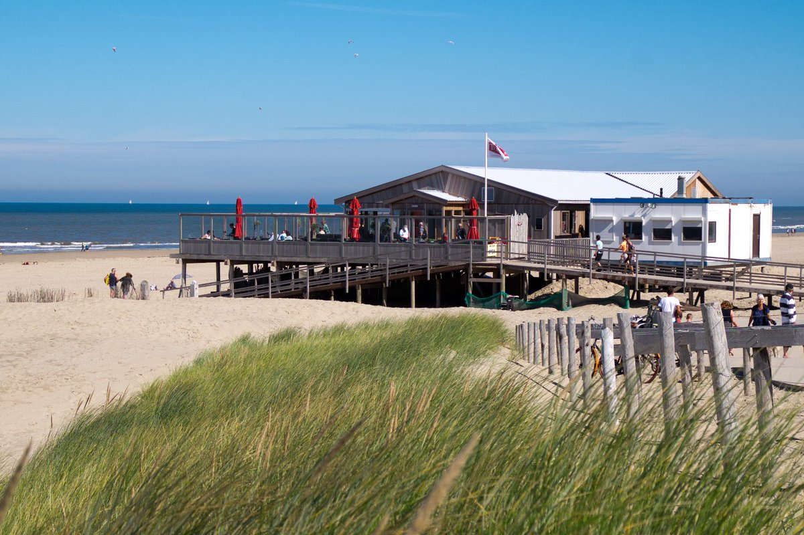
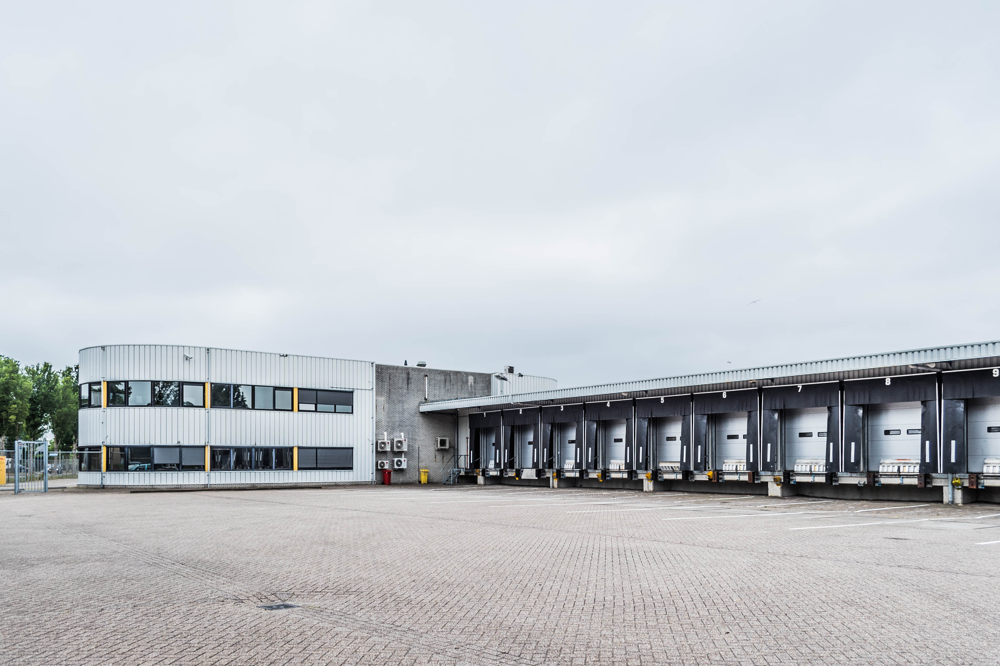

Luctor et Emergo
Ik heb bij Luctor uit emergo van 2018 tot 2022 gewerkt. Helaas besloot de eigenaar ermee te stoppen. En kocht een ander iemand het bedrijf op diegene besloot om het helemaal te verbouwen en dat is nog steeds aan de gang. Bij dit bedrijf deed ik een all round functies. Dit houdt in dat ik alles deed zoals terraslopen, achter de bar staan en in de keuken alle gerechten klaar maken.

Beentjes Groentebroers
Bij Beentjes Groentebroers ben ik begonnen in augustus 2022. Hier werk ik momenteel nog steeds. Ik bekleed hier de functie als chauffeur. dat betekent dat ik bij veel bedrijven hun groente bestellingen rond breng.
DHL Alkmaar
Ook bij DHL Alkmaar werk ik nog steeds. Hier ben ik in Januari 2022 begonnen. Bij DHL werk ik in het magazijn. en bekleed ik de functie beginnende teamleider. Dit betekent dat ik mensen mag aansturen om te vertellen wat ze moeten doen. Zit ik veel op de heftruck en help ik waar ik kan helpen om het proces van pakjes sorteren zo goed mogenlijk te laten verlopen.
